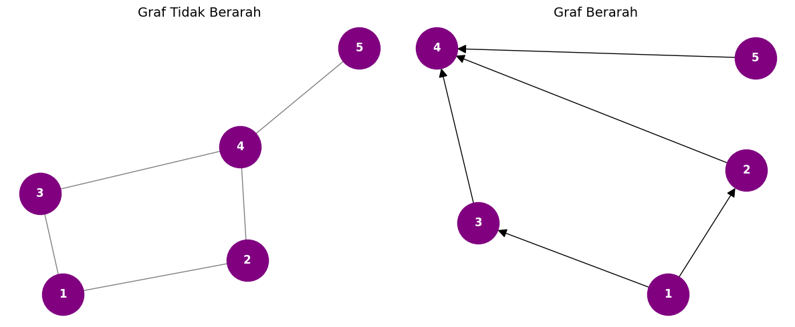
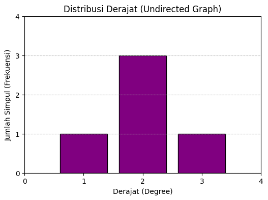

Implementasi Graf Berarah, Tidak Berarah, dan Analisis Metrik#
Dokumen ini memuat implementasi Graf Tidak Berarah (Undirected Graph) dan Graf Berarah (Directed Graph) menggunakan pustaka Python networkx dan matplotlib, beserta analisis metrik dasarnya.
import networkx as nx
import matplotlib.pyplot as plt
import collections
# ==========================================
# 1. Pembuatan Graf
# ==========================================
fig, axes = plt.subplots(nrows=1, ncols=2, figsize=(12, 5))
# --- Graf Tidak Berarah ---
G_undirected = nx.Graph()
edges_undirected = [(1, 2), (1, 3), (2, 4), (3, 4), (4, 5)]
G_undirected.add_edges_from(edges_undirected)
pos_undirected = nx.spring_layout(G_undirected, seed=42)
axes[0].set_title("Graf Tidak Berarah", fontsize=14)
nx.draw(G_undirected, pos_undirected, ax=axes[0],
with_labels=True, node_color='purple',
node_size=2000, font_size=12, font_weight='bold',
font_color='white', edge_color='gray')
# --- Graf Berarah ---
G_directed = nx.DiGraph()
edges_directed = [(1, 2), (1, 3), (2, 4), (3, 4), (5, 4)]
G_directed.add_edges_from(edges_directed)
pos_directed = nx.spring_layout(G_directed, seed=42)
axes[1].set_title("Graf Berarah", fontsize=14)
nx.draw(G_directed, pos_directed, ax=axes[1],
with_labels=True, node_color='purple',
node_size=2000, font_size=12, font_weight='bold',
font_color='white', edge_color='black',
arrows=True, arrowsize=20)
plt.tight_layout()
plt.show()

2. Metrik Dasar Graf (Pada Graf Tidak Berarah)#
Bagian ini akan menghitung derajat, rata-rata derajat, kepadatan, dan matriks ketetanggaan dari G_undirected.
# A. Menghitung Derajat (Degree)
degrees = dict(G_undirected.degree())
print("--- Derajat (Degree) masing-masing simpul ---")
for node, deg in sorted(degrees.items()):
print(f"Simpul {node}: {deg} sisi")
# B. Menghitung Rata-rata Derajat
avg_degree = sum(degrees.values()) / G_undirected.number_of_nodes()
print(f"\nRata-rata Derajat: {avg_degree}")
# C. Menghitung Kepadatan (Density)
density = nx.density(G_undirected)
print(f"\nKepadatan (Density) Graf: {density:.3f}")
# D. Menampilkan Matriks Ketetanggaan (Adjacency Matrix)
adj_matrix = nx.adjacency_matrix(G_undirected).todense()
print("\n--- Matriks Ketetanggaan (Adjacency Matrix) ---")
print(adj_matrix)
--- Derajat (Degree) masing-masing simpul ---
Simpul 1: 2 sisi
Simpul 2: 2 sisi
Simpul 3: 2 sisi
Simpul 4: 3 sisi
Simpul 5: 1 sisi
Rata-rata Derajat: 2.0
Kepadatan (Density) Graf: 0.500
--- Matriks Ketetanggaan (Adjacency Matrix) ---
[[0 1 1 0 0]
[1 0 0 1 0]
[1 0 0 1 0]
[0 1 1 0 1]
[0 0 0 1 0]]
Visualisasi Distribusi Derajat#
Distribusi derajat menunjukkan frekuensi munculnya setiap nilai derajat di dalam graf menggunakan bar chart.
# Mengambil nilai derajat dan menghitung frekuensinya
degree_sequence = sorted([d for n, d in G_undirected.degree()], reverse=True)
degree_count = collections.Counter(degree_sequence)
deg, cnt = zip(*degree_count.items())
# Membuat visualisasi bar chart
plt.figure(figsize=(6, 4))
plt.bar(deg, cnt, width=0.80, color="purple", edgecolor="black")
plt.title("Distribusi Derajat (Undirected Graph)")
plt.ylabel("Jumlah Simpul (Frekuensi)")
plt.xlabel("Derajat (Degree)")
plt.xticks(range(max(degree_sequence) + 2))
plt.yticks(range(max(cnt) + 2))
plt.grid(axis='y', linestyle='--', alpha=0.7)
plt.show()

E. Koefisien Klasterisasi (Clustering Coefficient)#
Koefisien klasterisasi mengukur seberapa besar kecenderungan simpul-simpul dalam jaringan untuk saling berkelompok membentuk segitiga (komunitas). Nilainya berada di antara 0 hingga 1.
Koefisien Klasterisasi Lokal: Mengukur kecenderungan pengelompokan pada satu simpul tertentu (seberapa banyak tetangga dari simpul tersebut yang juga saling terhubung).
Rata-rata Koefisien Klasterisasi (Global): Merupakan rata-rata dari nilai klasterisasi lokal semua simpul, yang menunjukkan tingkat pengelompokan graf secara keseluruhan.
# 1. Menghitung Koefisien Klasterisasi Lokal untuk setiap simpul
local_clustering = nx.clustering(G_undirected)
print("--- Koefisien Klasterisasi Lokal ---")
for node, cc in sorted(local_clustering.items()):
print(f"Simpul {node}: {cc:.3f}")
# 2. Menghitung Rata-rata Koefisien Klasterisasi untuk seluruh graf
avg_clustering = nx.average_clustering(G_undirected)
print(f"\nRata-rata Koefisien Klasterisasi (Global): {avg_clustering:.3f}")
--- Koefisien Klasterisasi Lokal ---
Simpul 1: 0.000
Simpul 2: 0.000
Simpul 3: 0.000
Simpul 4: 0.000
Simpul 5: 0.000
Rata-rata Koefisien Klasterisasi (Global): 0.000